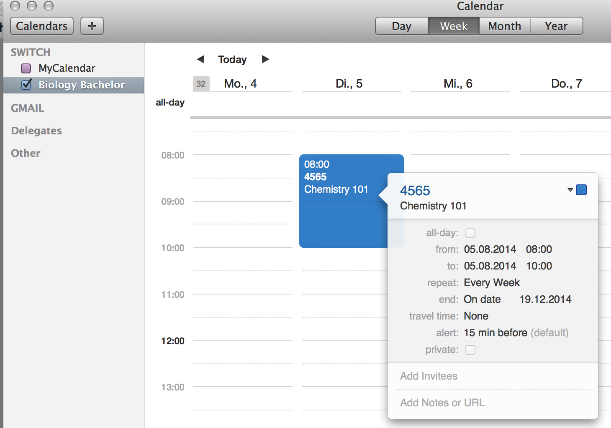

Automatic, periodic Recordings
If you have repeating events, eg. lectures, you can define periodic recording. This allows you to start, stop and upload recording automatically without human intervention.
Prerequisites
- A calendar application capable of providing information using iCal is installed on your computer. This manual expects you to use Calendar.app which is preinstalled on any recent Apple computer.
- The SWITCHcast Recorder is installed on your computer
- All input sources are connected to your computer
Create a new calendar
- Create a new calendar (File > New Calendar) and give it a meaningful name
- Add repeating events in the calendar in the time span you want the recording to take place. As the title of the recording event use the channel number.
-
- Go to the 'Calendar' tab in the Preferences Panel.
- Choose the calendar you want to connect for automatic recordings